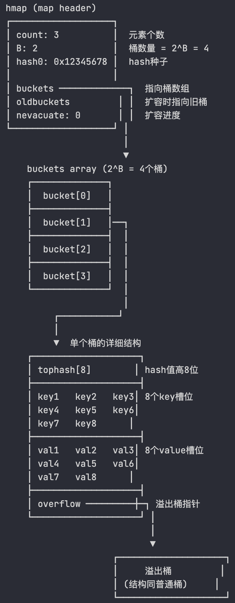

🧠 Map的定义
Map 是一种无序的键值对的集合。Map 最重要的作用是通过 key 来快速检索数据，key 类似于索引，指向数据的值。Map 是一种集合，所以我们可以像迭代数组和切片那样迭代它。不过，Map 是无序的，遍历 Map 时返回的键值对的顺序是不确定的。在获取 Map 的值时，如果键不存在，返回该类型的零值
特点
- 非并发安全，如果在不同 goroutine 并发读写同一个 map，会导致竞态问题甚至崩溃（运行时检测会 panic）并发读写需要并发安全的映射，可以加锁（使用
sync.Mutex）或者使用 Go 的并发安全容器（如sync.Map）。 - 迭代顺序是随机的，不保证顺序
- 键必须是可比较的类型
💡 面试要点：Map 的键类型有什么限制？
Go 语言中，map 的键必须是可比较的类型（comparable）。
可比较类型：
- 基本类型：
int、float、string、bool - 指针、
channel、interface - 结构体（如果所有字段都可比较）
- 数组（如果元素类型可比较）
不可比较类型：
slice、map、func
为什么有这个限制？
- map 的底层实现是哈希表，需要通过
==比较键是否相等 - 如果键不可比较，就无法判断两个键是否相同
示例：
|
|
📐 基本操作
📝 声明和初始化
-
声明映射：
var m map[string]int -
分配内存空间（初始化）：
make(map[KeyType]ValueType, initialCapacity)- map 的零值是 nil，不能直接赋值元素，必须用
make初始化
- map 的零值是 nil，不能直接赋值元素，必须用
-
使用字面量创建Map
1 2 3 4 5 6// 使用字面量创建 Map m := map[string]int{ "apple": 1, "banana": 2, "orange": 3, }
💡 面试要点：map 的容量可以指定吗？
可以，使用 make 时指定初始容量可以减少扩容次数，提高性能。
|
|
建议：
- 如果知道大概的元素数量，建议指定容量
- 避免频繁扩容带来的性能开销
💡 面试要点：Map 的性能优化建议
-
预分配容量
- 如果知道大概的元素数量，使用
make(map[K]V, hint)预分配 - 避免频繁扩容带来的性能开销
- 如果知道大概的元素数量，使用
-
避免大 value 类型
- map 的 value 存储在桶中，大 value 会增加内存占用
- 考虑使用指针类型：
map[K]*V
-
合理使用 delete
- 删除元素不会缩容，如果大量删除后内存占用高，考虑重建 map
-
并发场景选择合适的方案
- 读多写少：使用
sync.Map - 写多读少：使用
map + sync.RWMutex
- 读多写少：使用
性能对比示例：
|
|
🔍 获取和修改元素
-
获取元素（通过键来获取值）
1 2v1 := m["apple"] v2, ok := m["pear"] // 如果键不存在，ok 的值为 false，v2 的值为该类型的零值 -
修改/插入元素：
m["apple"] = 5 -
获取长度：
func len(var map) int
💡 面试要点：如何判断 map 中是否存在某个 key？
使用双返回值的方式：
|
|
🔁 遍历map
使用range循环来遍历map，返回键k和值v
|
|
- Go 中遍历 map 的顺序是不确定的，每次运行可能会不同。
💡 面试要点：为什么 Go map 的遍历顺序是随机的？
1. 设计原因
- 避免依赖顺序：防止开发者依赖遍历顺序，提高代码可移植性
- 哈希表的天然特性：哈希表本身就是无序的
- 安全性考虑：避免攻击者利用顺序性进行攻击
2. 实现原理
Go 在遍历 map 时会：
- 随机选择一个起始桶
- 随机选择桶内的起始位置
- 每次遍历的顺序都可能不同
代码示例：
|
|
输出示例：
|
|
3. 如果需要有序遍历怎么办？
先将 key 排序，再按顺序遍历：
|
|
🗑️ 删除元素
func delete(m map[Type]Type, key Type)：从 map 中删除键值对- 删除不存在的键：不会报错
- nil map 上使用
delete：不会panic只是无效操作 - 删除 key 操作只是将对应的 key-value 对标记为空，但不会释放桶（不会释放内存），也不会触发缩容
💡 面试要点：删除 map 中的元素会缩容吗？
不会缩容。删除元素只是标记为空，不会释放桶的内存，也不会触发缩容。
原因：
- 缩容需要重新分配内存和迁移数据，成本较高
- 删除操作频繁时，缩容会导致性能下降
- 如果需要释放内存，只能创建新的 map 并复制需要的元素
⚠️ 踩坑实录
💥 直接操作nil map，发生panic
问题：直接操作未初始化的map，会触发panic
|
|
解决方法：使用map前，需对map进行初始化。
|
|
🔢 float 类型作为 key 的问题
问题：float 类型可以作为 map 的 key 吗？
回答：
可以，但不推荐。
原因：
- float 类型存在精度问题，
NaN不等于自身 - 计算哈希时可能出现不稳定的结果
- 可能导致查找失败
示例：
|
|
📋 map 的 value 为切片的问题
问题：map 的 value 可以是切片吗？
回答：
可以，但需要注意初始化。
示例：
|
|
⚡ 并发读写 map 导致 panic
问题：并发读写 map 会导致什么问题？
回答：
Go map 不是并发安全的。并发读写会导致 panic: concurrent map read and map write 或 panic: concurrent map writes。
原因：
- Go runtime 会检测并发访问，发现冲突时直接 panic
- 这是一种快速失败（fail-fast）机制，避免数据竞争导致的不确定行为
解决方案：
|
|
🔬 底层原理
🪣 底层数据结构
在 Go 语言中，map 类型的底层实现就是哈希表，map 类型的变量 本质上是一个指针 *hmap ，指向 hmap 结构体。
- Go map 的底层是一个
buckets数组 - 数组的每个元素都是一个桶（bucket）
- 每个桶可以存储 8 个 kv，当桶满时，会创建溢出桶
|
|

Go 使用桶（bucket）存储 kv 信息，对应的数据结构是 bmap
|
|

提示
为什么设置为8个k-v键值对
8 个键值对的大小正好接近 CPU 的缓存行大小（通常是 64 字节），可以一次将整个桶加载到 CPU 缓存中，减少了 CPU 缓存未命中的概率，提升了访问性能
💡 面试要点：Go map 的底层实现原理
Go map 的底层实现是哈希表，核心数据结构是 hmap（hash map 的缩写），主要包含以下关键字段：
count：当前 map 中元素的数量B：桶数量的对数，桶数量为 $2^B$buckets：指向桶数组的指针oldbuckets：扩容时指向旧桶数组的指针hash0：哈希种子，增加哈希的随机性
每个桶（bmap）可以存储 8 个键值对，包含：
tophash：存储哈希值的高 8 位，用于快速定位keys和values：存储键值对overflow：指向溢出桶的指针
最后是一个 bmap 型指针，指向一个溢出桶，溢出桶的内存布局与常规桶相同，是为了减少扩容次数而引入的。当一个桶存满了，还有可用的溢出桶时，就会在桶后面链一个溢出桶，继续往溢出桶里面存。

实际上如果哈希表要分配的桶的数目大于 $2^4$，就认为使用到溢出桶的几率较大，就会预分配 $2^{B-4}$ 个溢出桶备用，这些溢出桶与常规桶在内存中是连续的，只是前 $2^B$ 个用作常规桶，后面的用作溢出桶。
🎯 哈希定位原理
类似于 Java 的 HashMap，参考往期博客 map 的哈希方法采用 与运算： hash & (m-1) 来定位哈希桶
需要注意的是，与运算方法如果想确保运算结果落在区间 [0, m-1] 而不会出现空桶，就要限制桶的个数 m 必须是 2 的整数次幂。这样 m 的二进制表示一定只有一位为 1，并且 m-1 的二进制表示一定是低于这一位的所有位均为 1。如果桶的数目不是 2 的整数次幂，就有可能出现有些桶绝对不会被选中的情况。


哈希定位过程
- Go 通过哈希函数，将 key 转成 hash（uint64）
- 桶的位置：
bucketIndex = hash & (2^B - 1)，等价于hash & mask - 桶内位置：使用 hash 的高 8 位（tophash）在桶内快速查找匹配的 key
💡 面试要点：哈希定位过程
-
为什么桶的个数必须是 2 的整数次幂？
- 使用与运算
hash & (m-1)定位桶，要求 m 必须是 2 的幂 - 这样 m-1 的二进制表示是低位全 1，确保哈希值能均匀分布到所有桶
- 如果不是 2 的幂，会出现某些桶永远不会被选中的情况
- 使用与运算
-
哈希定位的完整流程：
- 通过哈希函数计算 key 的哈希值（uint64）
- 使用低 B 位定位桶：
bucketIndex = hash & (2^B - 1) - 使用高 8 位（tophash）在桶内快速查找匹配的 key
⚔️ 哈希冲突
Go map 与 Java HashMap 类似，同样使用拉链法

冲突解决策略
- 当桶满时，会创建溢出桶（overflow bucket）
- 查找时会依次遍历链表上的所有桶
- 为了避免链表过长导致性能下降，当链表太长时会触发扩容
💡 面试要点：哈希冲突解决
Go map 使用拉链法解决哈希冲突：
- 当桶满时，创建溢出桶（overflow bucket）
- 查找时依次遍历链表上的所有桶
- 为了避免链表过长导致性能下降，当链表太长时会触发扩容
📈 扩容机制
🚀 扩容的触发条件
- 负载因子超过 6.5 时，触发 翻倍扩容（kv 数量 / 桶的数量 > 6.5 时，桶的数量翻倍）
- 溢出桶过多时，触发 等量扩容（溢出桶过多，分布不均浪费内存，重建 map）
扩容期间的操作处理
- 读操作：检查新旧桶，不触发迁移
- 新增操作：触发迁移，在新桶中写入
- 更新操作：触发迁移，确保目标桶已迁移后，在新桶更新数据
- 删除操作：检查新旧桶，不触发迁移
🔄 渐进式迁移

hmap 的源码如下
|
|
在哈希表扩容时，先分配足够多的新桶，然后用一个字段记录 “旧桶” 的位置 oldbuckets ，再增加一个字段记录 “旧桶” 的迁移进度，例如记录下一个要迁移的 “旧桶” 编号 nevacuate 。

在哈希表每次读写操作时，如果检测到当前处于扩容阶段，就完成一部分键值对的迁移任务，直到所有的 “旧桶” 迁移完成，“旧桶” 不再使用才算真正完成了一次哈希表的扩容。把键值对迁移的时间分摊到多次哈希表操作中的方式，就是 “渐进式扩容” 了，可以避免一次性扩容带来的性能瞬时抖动。
✨ 翻倍扩容
当负载因子大于 6.5，即 map 元素个数 / 桶个数 > 6.5 时，就会触发翻倍扩容
|
|
bucketCnt= 8，一个桶可以装的最大元素个数loadFactor= 6.5，负载因子，平均每个桶的元素个数bucketShift(B)：桶的个数
此时，buckets 就会指向刚分配出来的新桶，而 oldbuckets 则会指向旧桶，并且 nevacuate 为 0，标识接下来要迁移编号为 0 的旧桶，每个旧桶的键值对都会分流到新桶中。
同时这里体现出桶的个数设置为2的n次方的优点，当 Map 扩容时，通过容量为 2 的 n 次方，扩容时只需通过简单的位运算判断是否需要迁移，这减少了重新计算哈希值的开销，提升了重新哈希的效率。
例如，旧桶的数量为 4，那么翻倍扩容后新桶的数量就为 8。

不需要每个 bucket 重新 hash 算下标。因为元素的新位置只与高位有关
此时迁移桶只要判断原来的 hash 拓展后新增的位是 0 还是 1

若为 0 则保持在原来的位置（hash 1 保持为 0）
若为 1 则被移动到原来的位置加上旧数组长度的地方（hash 2 被移动到 0+4=4 处）
🔃 等量扩容
如果负载因子没有超标，但是使用的溢出桶较多，也会触发扩容：
- 当常规桶数量不大于 $2^{15}$ 时（B <= 15），此时如果溢出桶总数 >= 常规桶总数（
noverflow>= $2^B$），则认为溢出桶过多，就会触发等量扩容。 - 当常规桶数量大于 $2^{15}$ 时（B > 15），此时直接与 $2^{15}$ 比较，当溢出桶总数 >= $2^{15}$ 时（
noverflow>= $2^{15}$），即认为溢出桶太多了，也会触发等量扩容。
|
|
所谓等量扩容，就是创建和旧桶数量一样多的新桶，然后把原来的键值对迁移到新桶中。当有很多键值对被删除的时候，就有可能出现已经使用了很多溢出桶，但是负载因子仍没有超过上限值的情况。此时如果触发了等量扩容，则会分配等量的新桶。而旧桶的每一个桶则会迁移到对应的新桶中，迁移完后可以使每个键值对排列的更加紧凑，从而减少溢出桶的使用。

💡 面试要点：Map 扩容机制
-
为什么使用渐进式扩容？
- 避免一次性扩容导致的性能抖动
- 将迁移时间分摊到多次读写操作中
-
扩容期间的操作：
- 读操作：检查新旧桶
- 写操作：触发迁移后在新桶操作
- 删除操作：检查新旧桶
-
两种扩容方式的区别：
- 翻倍扩容：负载因子 > 6.5 时触发，桶数量翻倍
- 等量扩容：溢出桶过多时触发，桶数量不变，重新整理数据
🔐 Sync.Map
Map 不是并发安全的，Go 在 1.09 版本引入了线程安全的 Sync.Map 。但是遇到写多读少的情况需要频繁加锁，可能比 Map 加锁使用时效果更差
|
|
read：使用atomic.Value存储readOnly结构，支持无锁读操作。dirty：包含最新数据的普通哈希表，写操作优先更新此表，但需加锁。entry.p：三种状态：- 指向实际值：正常状态
nil：键被删除，但dirty中可能存在expunged：键被彻底删除，仅存在于read中
💡 特点
- 无锁读 ：大部分读操作无需加锁，通过原子操作直接访问
read，性能极高。 - 延迟删除 ：删除操作仅标记
entry为nil，在dirty提升时才真正删除，减少锁竞争。 - 读写分离：
read存储热点数据，dirty存储最新数据，通过amended标记协调两者。 - 自动迁移：当
misses达到阈值时，dirty自动提升为read，后续写操作重建dirty，避免dirty长期积累大量数据。
💡 面试要点：Go map 是并发安全的吗？如何实现并发安全？
Go map 不是并发安全的。并发读写会导致 panic。
实现并发安全的方式：
1. 加锁（sync.Mutex 或 sync.RWMutex）
|
|
2. 使用 sync.Map
适用于读多写少的场景：
|
|
面试要点：
-
为什么 map 不设计为并发安全？
- 并发安全需要加锁，会降低性能
- 大多数场景不需要并发访问
- 让使用者根据场景选择合适的方案
-
sync.Map的原理：- 读写分离：
read存储热点数据，dirty存储最新数据 - 无锁读：大部分读操作无需加锁
- 延迟删除：标记删除，减少锁竞争
- 读写分离：
-
sync.Map的适用场景：- 读多写少
- key 集合相对稳定
- 写多读少时性能不如加锁的 map
🔧 基本操作
-
读取：
func Load(key interface{}) (value interface{}, ok bool)value：键对应的值（类型需自行转换）。ok：键是否存在的标志。
-
存储/更新：
func Store(key, value interface{})- 若键已存在，新值会覆盖旧值；不支持存储
nil（会触发 panic）
- 若键已存在，新值会覆盖旧值；不支持存储
-
删除键：
func Delete(key interface{})- 实际为逻辑删除（标记
entry为nil），在dirty提升时才物理删除。 - 若键不存在，不会报错。
- 实际为逻辑删除（标记
-
若存在则加载否则存储：
func LoadOrStore(key, value interface{}) (actual interface{}, loaded bool)actual：键的当前值（无论是否新存入）。loaded：键是否已存在的标志（true表示已存在，直接加载；false表示新存入）。
-
遍历：
Sync.Map有自带的**Range** ，Range(func(key, value any) bool，any（即interface{}），要用类型断言才能使用具体类型1 2 3 4 5 6m.Range(func(key, value any) bool { k := key.(string) v := value.(int) fmt.Printf("%s => %d\n", k, v) return true })
🧩 底层原理
⬆️ dirty提升
用于将 dirty 哈希表中的数据同步到 read 视图，从而减少后续读操作的锁竞争。
当满足以下条件时，dirty 会被提升为新的 read ：
read中找不到键：读操作（如Load）在read中未找到目标键，且amended=true（表示dirty包含新数据）。- misses 计数器达到阈值：连续多次（次数等于
len(dirty)）从dirty读取数据后，触发提升。
|
|
- 复制
dirty到read：将dirty的引用直接赋值给read，并重置amended为false。 - 清空
dirty：将dirty置为nil，等待下次写操作时重建。 - 重置
misses：计数器归零，准备下一轮统计。
📖 读取
|
|
- 优先从
read无锁读取，若存在直接返回。 - 若
read中不存在且amended=true（表示dirty有新数据），加锁从dirty读取，并记录一次miss。 - 当
misses累计达到len(dirty)时，触发dirty提升为read，避免频繁加锁。
💾 存储
|
|
- 尝试无锁更新
read中的entry（若存在且未被删除）。 - 若
read中不存在或已被标记为expunged，加锁操作：- 若
dirty中存在该键，直接更新。 - 若
dirty中不存在：- 首次写入
dirty时，将read中所有未删除的entry复制到dirty。 - 将新
entry加入dirty，并标记amended=true。
- 首次写入
- 若
🗑️ 删除
|
|
- 若
read中存在该键，标记entry.p=nil（逻辑删除）。 - 若
read中不存在且amended=true，加锁从dirty中物理删除该键。